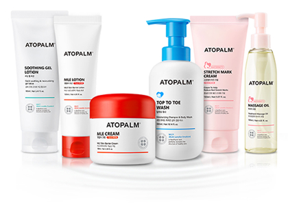
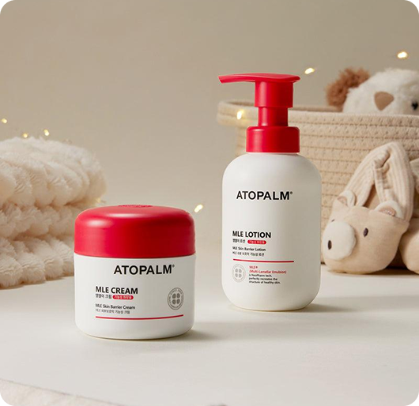
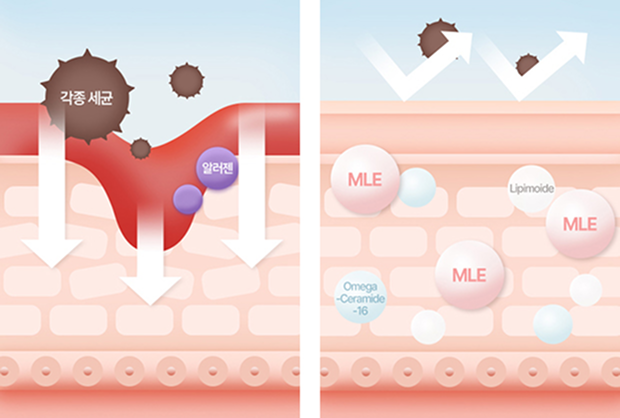
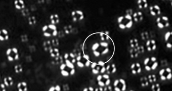
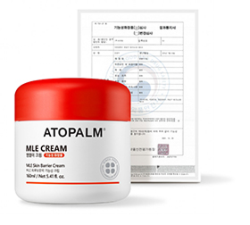

아토팜
아토팜은 민감한 피부를 건강하게 만들기 위해 피부가 민감해지는 이유를 고민하고,피부 지질 구조와 성분을 연구합니다. 피부 본연의 방어력을 회복하고 스스로 건강해지는 힘을 길러주는 것, 아토팜은 피부 보습을 넘어 피부장벽을 연구하고민감 피부 고민에 해답을 제시합니다.

브랜드 사이트 바로가기 →Brand Story
고객들이 일상 속에서 편안하게 피부를 가꿀 수 있도록 최신 연구 기술을 지원합니다. 보습부터 기능성까지 효과적이고 안전한 제품을 개발하고 고객들의 다양한 피부 타입과 고민에 맞는 솔루션을 제공하고 있습니다.

Brand Technology
-
- TECH 1독자 개발 피부장벽 기술 MLE®
-

MLE®는 건강한 피부구조를 가장 유사하게 재현한 (주)네오팜의 독자 개발 기술로, 지속형 피부 보호막을 형성하여 피부장벽을 건강하게 강화시키고 피부 본연의 방어력을 회복하는데 도움을 줍니다.
-
- TECH 2피부 친화 제형
-

실제 사람의 장벽 구조 MLE® 피부장벽 구조
MLE® 피부장벽 구조
피부 지질을 구성하는 세라마이드, 콜레스테롤, 지방산을 최적의 비율로 배합한 피부 친화적 구조로 민감해진 피부 속 수분은 지켜주고 외부 자극으로부터 피부를 보호해 줍니다.
-
- TECH 3국내 최초 피부장벽 회복 기능성 인증 및 저자극, 전제품 피부 자극 테스트 완료
-

국내 최초 피부장벽 회복 기능성 인증*으로 (주)네오팜만의 독자적인 피부장벽 기술을 보유합니다. 또한 파라벤, 에탄올, PEG, 미네랄오일, 색소 등 피부에 유해한 성분을 모두 배제한 저자극 안전 처방 시스템과 전 제품 피부 자극 테스트를 완료하여 연약한 피부의 아기부터 민감한 피부의 성인까지 안심하고 사용할 수 있습니다.
Brand Expansion
유사세라마이드 원천기술과 MLE® 기술의 전세계 특허를 기반으로 미국·러시아·중국 등에 수출되고 있습니다.
- 10+ 수출 국가 미국·러시아·중국 등
- 7 특허 출원국 MLE® 원천기술
- 19년 K-BPI 1위 연속 민감성 스킨케어 부문
- 3 해외 법인 USA · Europe · China